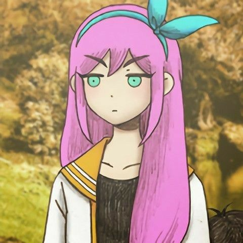
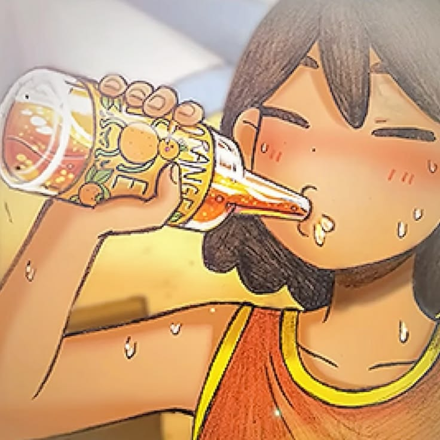
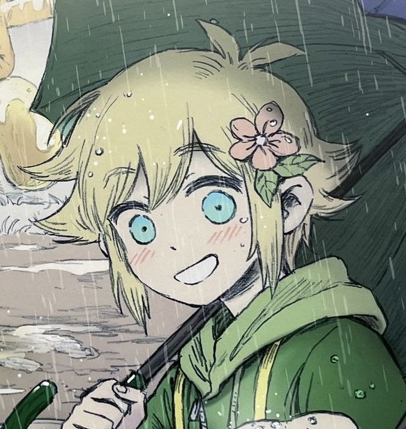
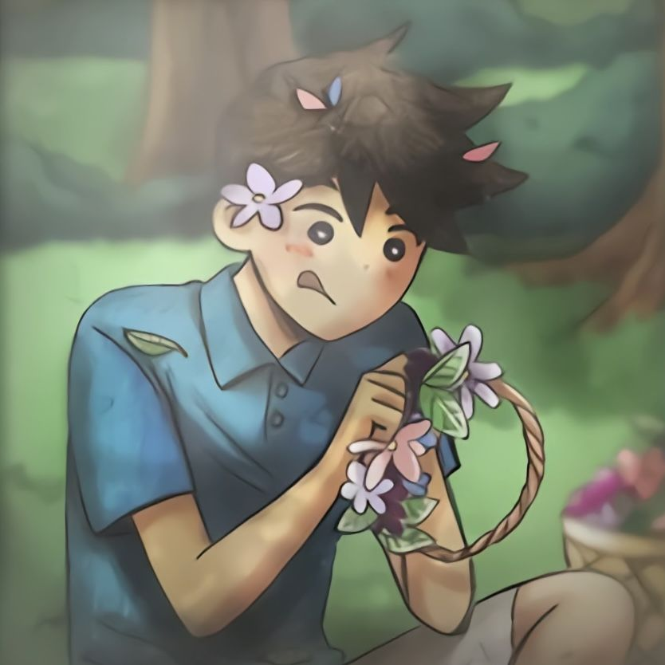
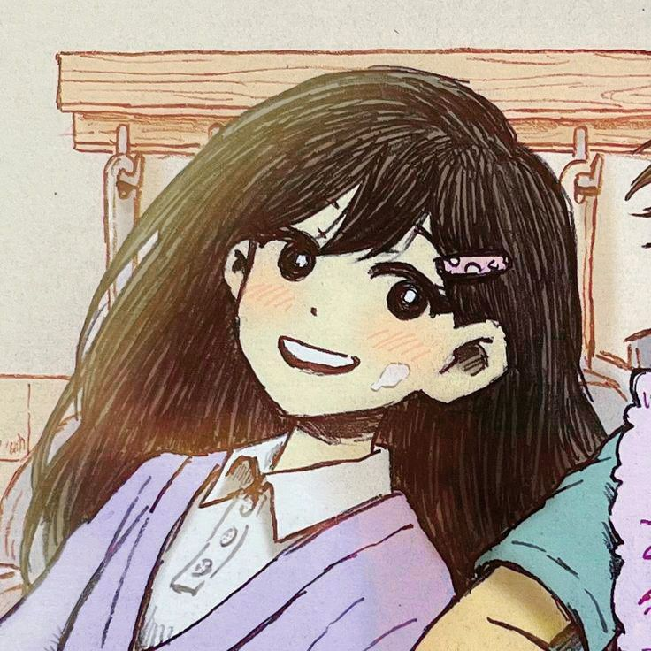

Omori
Omori é o personagem que dá nome ao jogo. Ele está relacionado ao mundo dos sonhos, onde o jogador explora cenários e encontra outros personagens durante a aventura.

Aubrey
Aubrey é uma personagem de personalidade forte. Ela possui uma relação importante com os outros integrantes do grupo e participa de diferentes momentos da história.

Kel
Kel é conhecido por sua energia e seu jeito animado. Ele participa das aventuras com os amigos e contribui para os momentos mais descontraídos da história.

Basil
Basil é um garoto gentil, tímido e apaixonado por plantas e fotografia. Ele gosta de registrar momentos especiais com seus amigos em seu álbum de fotos.

Hero
Hero é o irmão mais velho de Kel. Ele costuma demonstrar cuidado com os amigos e é conhecido por seu jeito atencioso.

Mari
Mari é a irmã mais velha de Omori e uma jovem gentil, carinhosa e responsável. Ela gosta de tocar piano e é conhecida por sua dedicação e perfeccionismo.

Características dos personagens
Cada personagem apresenta características próprias que contribuem para a história:
- Omori: está ligado ao mundo dos sonhos.
- Aubrey: possui uma personalidade marcante.
- Kel: é animado e cheio de energia.
- Basil: é gentil, tímido e apaixonado por plantas e fotografia.
- Hero: é atencioso, cuidadoso com os amigos e ama cozinhar.
- Mari: é carinhosa, responsável e gosta de tocar piano.